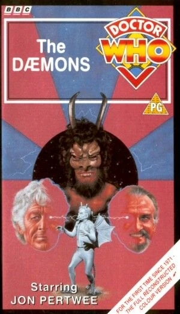

Эра Третьего Доктора (8 сезон)
<<< НАЗАД ||| 5. Демоны ||| ДАЛЬШЕ >>>
Субтитры: Русские и Английские |  |
|---|---|
Субтитры: только Английские | |
с обновлением визуальных эффектов (cunningmunki) Субтитры: отсутствуют | |
Дата выхода: 22 мая - 19 июня 1971
Формат: 5 эпизодов по 25 мин.
| Эпизод 4 сохранился в цвете (видеокассета PAL 2") Эпизоды (1-3 и 5) сохранились в ч/б * Цвет восстановлен (PAL D3) |
|---|
 помощник |  помощник |  помощник | |
 помощник |  помощник |
В английской деревушке Тупик Дьявола археологи раскапывают древний курган, не подозревая, что тревожат нечто опасное. Местная жительница Олив Хоторн, которую все считают ведьмой, предупреждает о надвигающемся зле, и Доктор ей верит. Тем временем новый викарий деревни оказывается Мастером — он готовит ритуал, чтобы пробудить древнюю силу, скрытую под церковью. ЮНИТ фиксирует аномалии и готовится вмешаться. Серия смешивает британский фольклор с научной фантастикой: легенды о демонах оказываются отголоском инопланетного присутствия, а почти всё действие разворачивается в одной деревне.
 VHS - март 1993 |  DVD - 19 марта 2012 |  Blu-ray - 8 марта 2021 * Версия в нашей группе |
|---|


Трейлер: